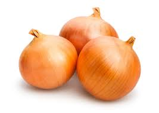

Welcome to Green Bounty, where freshness meets quality! We are a local vegetable stand dedicated to providing farm-fresh, organic, and conventionally grown produce at affordable prices. Our mission is to support healthy living by offering crisp, flavorful, and nutritious vegetables sourced from trusted farmers. Whether you're looking for crunchy cucumbers, sweet bell peppers, or hearty potatoes, we’ve got you covered. Visit us today and taste the difference of fresh, local produce!
Vegetables
Russet potatoes
Description:
Russet potatoes are starchy tubers with a brown, rough skin and white flesh. They are versatile and commonly used for baking, mashing, and frying.
BZ$8.55 per 5-pound bag.
Farming Method:conventionally (chemical) farmed.
$8.55 BZD
Carrots
Description:
Carrots are root vegetables, typically orange in color, though purple, red, yellow, and white varieties exist. They are crunchy when raw and sweeten when cooked.
Farming Metod:conventionally (chemical) farmed .
BZ$9.99 per 5-pound bag.
$9.99 BZD

Yellow Onions
Description:
Yellow onions have a golden-brown skin and a strong flavor that becomes sweet upon cooking. They are commonly used in a variety of dishes for their aromatic qualities.